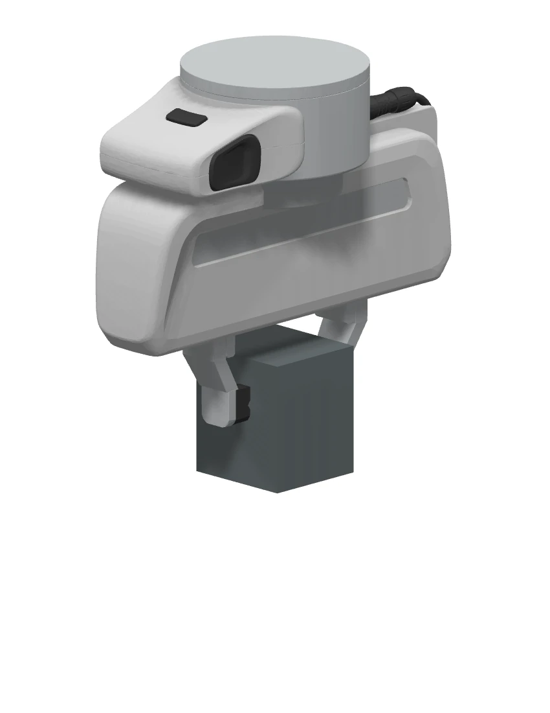
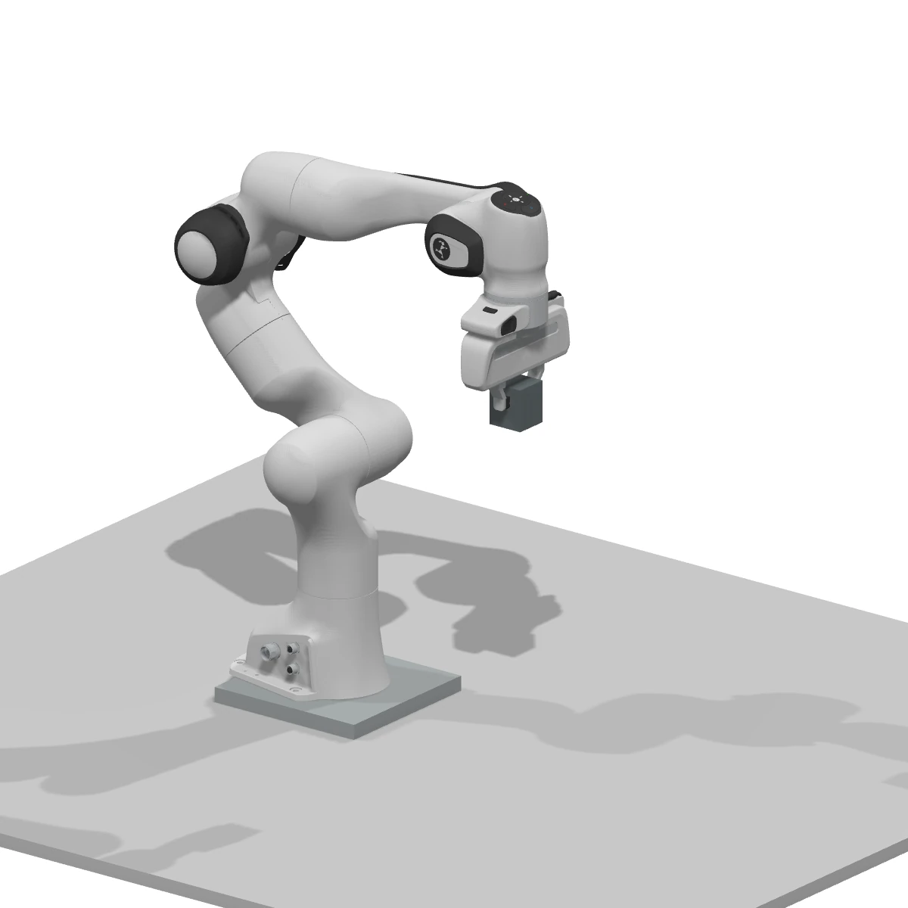

PHYSICAL IDENTIFIABILITY
物理属性可辨识性与跨模态证据Physical Identifiability & Multimodal Evidence
外观等价的物体实例可能具有不同质量、内部结构和接触响应。该问题体现了视觉观测的可辨识性限制（Identifiability Limits），需要通过多模态测量约束物理属性分布。
从视觉语义表征到物理响应预测
视觉语言模型（Vision–Language Model, VLM）学习视觉观测与语言描述之间的对应关系。它能识别盒子、材质线索和接触位置，也能给出一个合理的质量范围。但物理资产需要的是这个实例、这个状态、这些条件下的属性：质量是多少，和桌面接触时有多滑，被压下去后会不会恢复。
本框架将自动标注表示为可修订的物理属性先验（Physical Property Prior），通过主动观测与接触获得新的测量约束，并将属性修订记录用于持续学习（Continual Learning）。
视觉、声音、触觉与力—动作特征的联合表征。
属性与观测、动作、标定和验证记录的关联。
在新增交互证据下更新物理参数分布。
通过实验设计提高参数可辨识性与采样效率。
证据溯源物理资产库
几何、部件、物理参数、适用条件、原始交互记录与版本历史。资产可以进入仿真，也能解释参数从哪里来。
物理属性标注与证据修订模型
只看图时输出合理先验；获得声音、触觉和力之后更新判断；信息不足时，知道应该补什么测量。
本文是一份拟议技术路线。页面交互是解释性演示，尚未连接机器人、训练任务或真实资产库。案例数字均明确标为示意，不代表已取得的实验结果。
和 OmniFysics-Nano-V2 的关系是什么？
基准论文已有静态属性和动态事件监督、SFT、分阶段 GRPO，并在 §4.2.3 描述了使用真实与模拟运动差异校准参数的流程。本文沿着这条主线，增加触觉与力的证据链、主动测量、交互前后纠错监督，以及 coding agent 组织的可复现研究循环。[1]
“使用触觉”“主动探索”“让 agent 写代码”都有前人工作。值得检验的贡献，是它们能否共同提高资产质量和模型对未见物体的标注能力。
HIERARCHICAL OPTIMIZATION
资产、模型与研究程序的分层优化Asset–Model–Pipeline Co-evolution
当前物体的参数可以在一次接触后更新；模型权重需要积累数据后训练；研究代码需要在独立比较后保留。把这三种更新分开，才能知道进步来自哪里。
01 / 自动标注
观测事实与物理属性先验 / Observation & Prior
输入
多视角图像、物体掩码、尺度与已有网格；可选动态视频和音频。
具体处理
定位对象和部件，识别可见材料线索，生成属性候选、区间和待验证问题。
输出与检查
结构化属性先验；没有实例证据的质量或摩擦只标为估计，不能升级成实测标签。
更新资产 φ
这个盒子的质量估计变了。当前模型权重保持固定，保存前后两个版本。
更新模型 θ
混合新数据与历史样本训练，检查未见资产表现、校准和遗忘。
更新程序 H
比较数据清洗、辨识方法、训练配置或采样策略的改动，保留有证据的收益。
φ 是资产物理参数，θ 是模型权重，H 是 agent 的研究程序。三者有独立的版本号与评价指标。
PROVENANCE-AWARE ASSET REPRESENTATION
条件化物理资产与证据溯源表示Conditional Physical Assets & Evidence Provenance
每个属性都应该能回答三个问题：在哪些条件下成立？由什么证据支持？还有多大不确定性？

| 资产层 | 保存什么 | 如何保证可用 |
|---|---|---|
| 几何与结构 | 尺度、视觉网格、碰撞网格、部件、空腔、关节 | 重建时保留空心结构；外观模型与碰撞近似分别存储。 |
| 属性与条件 | 质量、接触摩擦、有效刚度、阻尼及其区间 | 质量关联装载状态；摩擦关联两个表面、载荷和速度。 |
| 原始证据 | RGB-D、音频、触觉、力／力矩、动作、时间戳 | 统一时间与坐标系，并记录传感器标定版本。 |
| 推断与验证 | 辨识方法、残差、多解、保留验证实验 | 拟合用的实验与验证用的实验分开，不能用训练残差充当泛化。 |
| 版本与导出 | 旧标签、新标签、修改原因、求解器配置 | 可回滚；刚体导出到适配格式，软体保留求解器原生表示。 |
属性级来源追踪与不确定性表示
例如“摩擦系数 0.4”是不完整的描述。要知道是盒子底面和木板之间的静摩擦，还是橡胶指尖和盒子侧面的动摩擦；还要知道测试时的载荷、速度和表面状态。
证据等级属于单个属性。测量了质量，并不意味着同一资产的摩擦、刚度也已验证。
查看一条资产属性的 JSON 结构
{
"asset_id": "box_017",
"state_id": "sealed_unknown_fill",
"property": "kinetic_friction",
"contact_pair": ["box_017.bottom", "table_wood_02"],
"estimate": {"value": null, "interval": null, "unit": "1"},
"conditions": {"normal_load_N": null, "speed_m_s": null},
"evidence_level": "visual_prior",
"evidence_refs": [],
"next_measurement": "controlled_slide",
"asset_version": 0
}这是字段示例。未知值使用 null，不能用看似精确的默认数值掩盖缺测。
几何重建与资产初始化
标定多视角 RGB-D，分割对象并重建表面；统一米、千克、秒等单位；检查支撑、穿透与碰撞；把视觉网格、碰撞表示、部件和接触区域分别存储。空壳与实心物体需要不同的结构假设。
几何标定与参数解耦
错误尺度、接触法向或空腔表示会污染物理参数。先完成几何与执行器标定，再做物体辨识，避免用一个错误的摩擦系数去补偿另一种错误。[8]
PHYSICS KNOWLEDGE VERIFICATION
自动标注与物理知识一致性校验Automatic Annotation & Knowledge Verification
大模型负责提供候选，知识库负责检查条件，真实测量负责提供新证据。三者的职责和证据强度要保留下来。
物理属性标注、知识校验与训练数据构建Physical Annotation, Knowledge Verification & Data Construction
数据筛选Dataset Filtering
INPUT 图像 / 区域 / 深度
筛选完整对象，检查分割、尺度及视角覆盖。
- 保留可辨认实例
- 隔离严重遮挡
物理属性提议Physical Profiling
- Category
- Chair
- Material
- Wood candidate
- Body type
- Rigid hypothesis
- Mass
- Unknown
结构条件化Structural Conditioning
PARTS 椅背 / 座面 / 支撑
保留实心、空腔与复合材料等候选；隐藏结构需补充证据。
原型与先验检索Prototype Retrieval
Chair × Wood × Structure
按类别、材料、结构与适用条件检索；返回属性范围、来源和测量方法。
KB prior · 知识先验相似原型的质量不能直接赋给当前实例。校验与独立测量Verification & Measurement
- 单位与条件一致性
- 正值与区间约束
- 实例质量仍需称重
知识冲突触发补测；有效测量附标定、状态与证据 ID。
Measured · 测量证据属性 · 单位 · 不确定性
适用条件 · 来源 · 版本
观测 → 标签
旧预测 + 新证据 → 修订
独立测量 / 可重放证据
奖励评分与最终测试分离

多模态样本构建与候选标注生成
把图像、对象区域、视频事件、音频片段和已有几何组织成同一条样本。教师模型分别输出观察到的事实、物理属性假设、区间、理由和需要补测的问题。多次采样的分歧可用于发现难例，但一致同意也不等于真值。
硬约束校验与材料先验匹配
硬约束：单位一致、质量为正、区间顺序合法、公式的适用前提满足。软先验：特定材料或结构的常见范围，附上手册、测量方法与来源。超出常见范围时标记冲突，检查空腔、复合材料或异常状态，而不是强行截断成“常见答案”。
证据分级与质量加权采样
只通过知识检查的标签进入弱监督池；有标定和独立验证的标签进入高质量池。标签权重根据抽查准确度确定。操作失败但传感器有效的记录仍可提供有用物理证据；时间错位或传感器饱和的记录需要隔离。
信息驱动的资产与实验选择
优先处理模型分歧大、知识冲突明显、对任务重要、数据覆盖不足的资产。选择对象和选择动作是两个相互联系的决策。
物理知识库（Physics Knowledge Base, Physics KB）验证标签的一致性、约束满足情况与适用条件。它不能证明一个特定盒子里没有金属块，也不能把教师模型的猜测变成真实测量。
SUPERVISED & REINFORCEMENT LEARNING
监督微调与可验证强化学习Supervised Fine-tuning & Verifiable GRPO
监督微调（Supervised Fine-tuning, SFT）学习结构化标注与跨模态对齐；组相对策略优化（Group Relative Policy Optimization, GRPO）使用外部物理证据，对同一输入的候选回答进行相对奖励优化。

保留可训练 VLM 的视觉与语言能力，接入时序触觉编码器和力／动作编码器。动作特征包含位置、方向、速度、载荷、坐标系和单位。触觉编码可从 AnyTouch 2 或 Sparsh 起步；用 Octopi 的触觉语言理解作为对照。[2–4]
阶段 A · 多任务监督微调 / Multi-task SFT
| 训练任务 | 输入与目标 |
|---|---|
| 区域与材料 | 图像 + 部件区域 → 材料候选和可见依据 |
| 物理属性 | 当前可用模态 → 数值、单位、区间和适用条件 |
| 接触事件 | 同步序列 → 接触、滑移、变形、分离及时间位置 |
| 行为预测 | 资产状态 + 给定动作 → 运动或形变的预测摘要 |
| 证据纠错 | 交互前预测 + 新证据 → 修订后的标签与修改原因 |
| 请求测量 | 证据不足的观测 → unknown / 最有用的观测或接触 |
先对齐新增编码器和投影层，再进行参数高效微调；是否扩大可训练范围由开发集决定。训练时做模态缺失处理，分别评测视觉、视听、视触和完整输入，保证没有触觉的情况下也能工作。
接触前样本只能看到当时已有的观测。两个外观完全相同、内部填充不同的盒子，应允许相同的视觉先验。接触后的实际质量不能偷偷成为接触前输入的一部分。
阶段 B · 可验证奖励优化 / Verifiable GRPO

对同一输入采样一组候选回答（Grouped Responses）y₁…yG，分别解析参数、区间与证据引用。用独立测量的训练参考和预先定义的评分器得到 R₁…RG，再计算组内相对优势，鼓励更有证据、预测更准确的输出。
| 奖励项 | 怎么评分 | 防止什么偏差 |
|---|---|---|
| 属性准确度 | 和独立测量比较，按容差与量纲归一化 | 只输出知识库的常见值 |
| 物理预测 | 给定动作后，对照独立采集的训练参考轨迹或接触结果 | 仅拟合当前训练片段 |
| 不确定性 | 使用区间评分，兼顾覆盖率与宽度 | 把区间无限放宽来“永远正确” |
| 证据与事件 | 检查证据 ID、接触位置、事件类别与时序 | 编造测量、引用不存在的证据 |
| 结构与单位 | 检查 JSON、单位、上下界与条件字段 | 只学会漂亮格式却没有物理内容 |
各项奖励先归一化，权重在开发阶段确定后冻结。没有某项真值时采用预先定义的任务掩码；无效输出不能靠格式分获得正奖励。一组答案全部错误时回到难例采集或 SFT，不能凭空制造正样本。
阶段 C · 高层探测策略 / High-level Probe Policy
高层探测策略先用规则或 SFT 起步。有了可比较的执行数据后，再优化测量收益与成本。未执行过的动作没有真实触觉反馈，不能让模型自己想象结果后给自己打分。仿真可用于预训练，但最终要在相同真实预算下检验。
优化路径：资产参数 φ 与模型权重 θ
这是两条不同的优化链。物理辨识更新资产参数 φ；SFT／GRPO 更新模型权重 θ。可微求解器能够在满足条件时帮助拟合 φ；语言模型通常输出离散 token，不能直接声称整个系统天然端到端可微。若增加连续回归头，需要为它定义自己的监督损失和梯度路径。
ACTIVE SYSTEM IDENTIFICATION
主动感知与物理系统辨识Active Perception & Physical System Identification
根据当前物理信念（Parameter Belief）选择探测动作，以预期信息增益（Expected Information Gain, EIG）和执行成本为依据，更新参数后验，并通过独立交互验证辨识结果。
主动感知与接触实验的物理辨识机制Active Perception & Contact-based System Identification
根据待辨识属性选择实验。下列四项是候选动作；软体压入属于独立样本分支。
主动视觉观测Active Visual Perception
OBSERVE 多视角 RGB-D
补充遮挡、尺度和支撑关系；对齐物体与接触坐标。
Franka 准静态提起Quasi-static Lifting

MEASURE 净载荷 + 接触稳定性
对标定后的外力估计或测力装置去除工具重力与偏置，读取稳定阶段净载荷。
受控滑动Controlled Sliding
MEASURE 切向力 + 滑移起点
指定接触双方，在已知法向载荷下检测滑移起始时刻。
分级压入Controlled Indentation
MEASURE 力—位移 / 加载—卸载
对独立软体试样分级压入，扣除夹具和传感器接触层形变。

Franka Panda（FER）与 Franka Hand
采用官方视觉网格与关节坐标变换，按双指开合几何放置示意物体。上图提起动作使用夹爪局部渲染；左侧为机械臂全景。
净载荷需来自经过标定的外力估计或外置测力装置；模型渲染本身不提供质量测量。此图为几何配置示意，尚未进行动力学或抓取稳定性验证。
官方模型 / franka_description ↗ · 模型版本与渲染说明
ACTIVE VISION
主动视觉观测 / Active Visual Observation
查看底部、遮挡区域和反光变化，检查部件、支撑与材质假设。它可能减少几何不确定性，但不能保证识别封闭盒子的内部填充和质量。
图中 p(φ | D) 表示给定证据 D 的物理参数信念；实际实现可采用约束优化、多假设模型与重采样估计构造近似分布。需要通过独立测量检验其校准程度，不能把模型的自然语言置信度直接当作可靠后验。
| 目标属性 | 建议交互与观测 | 必须满足的条件 |
|---|---|---|
| 质量 m | 称重；或准静态提起后读取净载荷 | 去除工具自重和传感器偏置；低加速度；固定装载状态 |
| 静摩擦 μₛ | 在已知法向载荷下逐渐增加切向力，检测滑移起点 | 指定接触双方；测得 Fₜ 和 Fₙ；适用时 μₛ ≈ Fₜ/Fₙ |
| 动摩擦 μₖ | 控制法向载荷与速度滑动，记录稳定段力 | 区分静、动摩擦；滑动模型与载荷条件明确 |
| 有效刚度 k | 多级按压与卸载，测量力—位移曲线 | 扣除夹具及触觉胶体形变；k 的单位为 N/m |
| 阻尼 / 黏弹性 | 不同速度按压、保持、释放 | 需要时序数据和适合的模型；单次静态按压通常不足 |
| 恢复系数 e | 受控低能量碰撞，比较碰撞前后法向相对速度 | 排除持续外力、旋转与多次接触的混淆 |
“有效刚度”与材料杨氏模量不是同一个量。后者需要几何、接触模型和边界条件。触觉纹理也不能直接证明化学成分。参数不可唯一辨识时，应保留候选分布，或把输出降级为特定动作下的行为模型。
双层主动采样 / Hierarchical Active Sampling
第一层比较资产的模型分歧、知识冲突、类别覆盖和预期训练价值；第二层在该资产上比较探测动作。这样，真实交互同时服务于当前资产和未来模型。
停止准则 / Stopping Criteria
达到任务需要的精度，或预计收益低于成本时停止；预算耗尽或现有传感器不能区分候选时，明确留下未知项。主动感知不是无限追加实验。
MASS IDENTIFICATION CASE STUDY
质量辨识与后验修订案例Mass Identification & Posterior Revision
以下是一个教学案例。0.22 kg 仅用于解释数据流；它不是本项目的真实测量。切换步骤，查看证据怎样进入资产和训练样本。
ILLUSTRATIVE EPISODE / BOX_017
封闭盒子 · 内部填充未知
视觉属性先验 / Visual Property Prior
模型识别出外壳形状、可见材料与抓取区域。内部不可见，因此质量保持宽先验，不输出一个假装测过的精确值。
- 可见事实：黑色、封闭、规则外壳。
- 未知项：空壳还是有填充物。
- 输出：质量待验证；建议获取载荷证据。
mass.value: null
mass.source: visual_prior
interior: unknown
next_probe: quasi_static_lift交互前后配对监督 / Pre–Post Interaction Supervision
接触前：先验与可辨识性 / Prior & Identifiability
输入仅含外观与已有条件，目标是宽先验或测量请求。不能让模型死记“黑盒一定重 0.22 kg”。
接触后：后验修订 / Posterior Revision
输入增加净载荷、触觉稳定接触及动作状态，目标是质量估计、区间和证据引用。旧预测仍保留，用于解释为什么发生变化。
验证这轮学习是否有效，要再拿出模型没见过、填充情况不同的盒子。模型应该更善于判断何时需要测量，并在获得接触证据后更准确，而不是记住物体编号。
AGENTIC AUTORESEARCH
Coding Agent 驱动的自动研究Coding-agent-driven AutoResearch
外层 agent 维护研究程序；领域 VLM 学习标注；物理工具估计参数；执行层完成已注册的测量动作。每个环节都留下可以复现的输入与输出。

| 可改进部分 | 具体代码与任务 | 如何接受改动 |
|---|---|---|
| 数据生产 | 同步、区域关联、标签解析、证据检查、样本权重 | 用有标定的小型参考集检查，不覆盖原始测量 |
| 物理辨识 | 候选模型、初值、约束、误差项、数值优化器 | 在未参与拟合的交互上比较预测 |
| 模型训练 | 投影层、LoRA、数据混合、SFT 与 GRPO 配置 | 固定开发集比较准确度、校准、遗忘与成本 |
| 主动采样 | 资产优先级、候选动作、信息增益估计 | 在相同机器人分钟数与复位预算下比较 |
| 版本选择 | 整理假设、代码差异、快照、日志与评测报告 | 保留有效改动，失败分支也记录原因 |
是感知、标定、模型还是数据问题？
一次改变一类变量，写清预期影响。
保存数据、代码、权重与执行成本。
独立指标支持改进，才进入下一轮。
实现上可以先用一个 coding agent 加独立评估器。多个角色是职责划分，不要求一开始就启动复杂的多智能体系统。工程组织可参考 ENPIRE 的重复实验循环；程序化参数提议与仿真反馈可参考 LLMPhy。[10–11]
一轮自动研究的伪代码
for round_id in research_budget:
failure = analyze(development_evidence)
hypothesis = propose_one_change(failure)
candidate = edit_pipeline(hypothesis)
smoke_check(candidate, calibrated_examples)
assets = choose_informative_assets(candidate)
evidence = run_registered_probes(assets)
revised_assets = identify_and_validate(evidence)
snapshot = build_dataset(revised_assets, replay_data)
model = train_sft_then_grpo(snapshot, candidate)
report = compare_on_fixed_dev(model, incumbent)
keep_or_rollback(candidate, model, report)
# 所有配置冻结后，统一运行保留的最终测试集。Agent 可以改进候选方案，固定评估器独立维护。发现评分器 bug 时单独修复并重跑全部基线，不能悄悄改分数定义。真实动作由已验证的技能执行，速度、力和工作空间约束由执行层保持。
GENERALIZATION & ABLATION
泛化评估、基线与消融实验Generalization Evaluation, Baselines & Ablations
当前盒子拟合得更好，只能证明资产更新有效。要证明模型变强，必须在未见资产、未见动作和变化的接触条件上得到收益。
证据修订监督 / Revision Supervision
比较“只用最终标签”和“加入预测—动作—证据—修订对”，其余训练预算一致。
主动采样效率 / Active Sampling Efficiency
比较固定、随机和主动接触，计入复位、失败与标定占用的真实时间。
程序改进迁移 / Pipeline Transfer
比较固定研究代码与 coding agent 外循环，分别报告机器人、GPU、模型调用与人工成本。
| 基线 | 增加的能力 | 回答的问题 |
|---|---|---|
| B0 · 原始 VLM | 未经本任务微调 | 起始标注能力是多少？ |
| B1 · 基准方法 | 同一骨干上的弱标签 + SFT + GRPO | 复现基准训练主线带来多少收益？ |
| B2 · 固定触觉 | 固定探测动作 + 实测监督 | 额外模态和真实证据是否有效？ |
| B3 · 随机接触 | 与主动方案匹配的接触预算 | 收益是否只是因为采集了更多数据？ |
| B4 · 主动接触 | 固定程序下的信息驱动采样 | 动作选择本身是否有效？ |
| B5 · 完整系统 | 主动接触 + coding agent 研究循环 | 程序改进是否带来额外泛化收益？ |
实例与家族划分 / Instance & Family Splits
按物体实例和结构家族划分；同一物体的视频帧、近重复网格不能跨越训练与测试。已知资产检索与新资产泛化分开评测。开发集可迭代使用，最终测试集不给 agent 细粒度反馈。
多维评价指标 / Evaluation Metrics
属性误差、区间覆盖率和宽度、事件 F1、未见动作的物理预测误差、达到目标精度需要的机器人分钟数、旧任务遗忘，以及每小时产生的已验证属性数量。
视觉-only、视听、视触和完整模态分别报告；SFT 与 SFT+GRPO 使用相同数据做对照。优先做实测奖励、纠错样本、主动采样三项消融，并以物体为单位计算置信区间。
分阶段实施与验证 / Staged Implementation
约 30 个物体
质量、接触摩擦、有效刚度。完成同步、单位、证据结构和独立参考测量。
SFT → GRPO
先固定动作形成可靠数据，再接入主动探测，比较相同预算下的收益。
约 300 个资产
拟规划 200 / 50 / 50 个训练、开发、测试资产；按家族划分后调整。最终冻结并评测。
规模是规划值。12 周里程碑以硬件已到位为前提；真实采集速度、重试率和算力决定最终排期。
RELATED WORK
相关研究与方法定位Related Work & Method Positioning
每篇工作对应一个具体模块。下面的用途是本文的设计选择，不表示这些论文已经实现了整套系统。
- 01
- 02
- 03
- 04
- 05
- 06
- 07
- 08
- 09
- 10
- 11
- 12
基准论文完整训练集、原型知识库和内部物理引擎的可获得性尚未全部确认。无法获得时，使用公开数据与可替换求解器，明确标注为方法级复现。官方模型卡对使用范围有额外约束，实际采用权重前应核对其条款。
继续阅读完整技术方案
17 个章节，包含更完整的模块接口、奖励设计、数据结构和阶段计划。
页面信息组织参考 RoboScientist Gallery 与 PhysicalRSI。这里的文字、结构图与交互为本方案制作，未使用参考网站的实验数据、视频或性能结论。